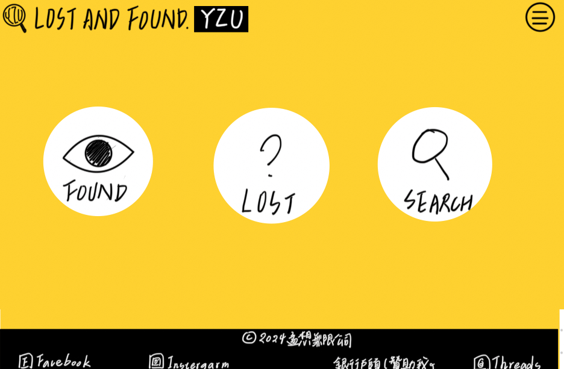

製作動機
一開始會想設計這個網站的契機，是因為自己有次在學校把東西搞丟，但不知道具體是在哪個地方遺失的。在尋找的過程中，發現學校各處都有失物招領處，如圖書館、學務處、聯合服務櫃檯、警衛室、Dcard、學生群組等，這些遺失物資訊散落在學校各處，一一去尋找也非常麻煩，所以決定善用在資訊管理學系所學會的 HTML、CSS 程式語言，設計出一個能通報、統整、尋找遺失物的網站。
主頁設計的部分
希望能提供簡潔直觀的設計，讓使用者能一目瞭然、馬上找到自己要用到的功能，其餘額外的功能都放置在側邊欄。之所以會只用黃、黑做出強烈的視覺設計，是因為希望使用者能留下強烈的印象，看到黃黑兩色就能馬上聯想到本網站，另一方面是因為我喜歡這兩個顏色。
Found 分頁的部分
採用經典的表單設計，使用 CSS 將所有項目置中，提供使用者直觀的操作方式。原始版本尚未完成圖片上傳、拾獲地點自動定位，以及表單資料同步至搜尋頁與統計頁等功能。
Lost 分頁的部分
採用與 Found 類似的表單設計，將欄位置中排列。原始版本尚未完成圖片上傳、地點自動定位，以及資料統計等功能。
Search 分頁的部分
此分頁礙於技術限制，不能提供真實搜尋及失物上傳功能，因此主要提供示意畫面。網頁參考各大購物平台的頁面設計，透過類似商品卡的設計，讓使用者一眼就能瀏覽想要的資訊。
原始首頁設計草圖
